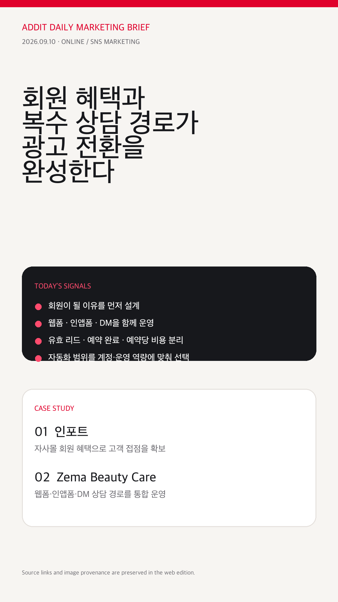

01
addit+
2026.09.10 · ONLINE / SNS MARKETING
회원 혜택과
복수 상담 경로가
광고 전환을 완성한다
인포트의 자사몰 회원 혜택과 Zema Beauty Care의 웹폼·인앱폼·DM 통합 사례로 가입·문의·예약을 하나의 운영 지표로 연결하는 방법을 살펴봅니다.
01 · JOIN회원이 될 이유
02 · ASK상담 경로 복수화
03 · BOOK예약 효율 분리
04 · AUTOMATE자동화 범위 선택
이번 브리핑의 결론은 단순합니다. 유입 경로보다 다음 행동의 설계가 먼저입니다.
Today’s Signals
오늘의 핵심
트렌드 4가지
02
03
04
Case Study 01 · Korea
회원 혜택을
전환 인프라로
 원문 이미지 · 한경비즈니스/다음
원문 이미지 · 한경비즈니스/다음인포트 — 자사몰 회원 혜택과 통합 광고관리
회원 대상 평생 A/S로 외부 구매자를 자사몰에 연결하고, Meta·Google·네이버 광고를 공통 지표로 비교한 참고 사례입니다. 자사몰 매출 비중 5%→70% 이상, 2026년 1월 매출 15배 수치는 임원 발표를 인용한 보도이며 광고 단독 효과로 확정할 수 없습니다.
회원 혜택자사몰 전환2차 인용
한경비즈니스 사례 원문 열기 →
이미지는 원고가 인용한 다음 송고본에 표시된 원문 이미지 URL을 사용했습니다. 이미지 클릭과 카드 클릭은 한경비즈니스 원문으로 연결됩니다. 다음 송고본 확인 · 인포트 공식몰 확인
Case Study 02 · Vietnam
복수 상담 경로를
성과 지표로
 원문 이미지 · TikTok Business
원문 이미지 · TikTok BusinessZema Beauty Care — 웹폼·인앱폼·DM 통합
단일 캠페인에서 웹사이트·Instant Form·DM을 자동 배분하고, 환영 메시지·자동 대화로 상담 정보를 수집한 베트남 뷰티 사례입니다. 플랫폼 발표 기준 리드 +410%, 리드당 비용 -39%, 유효 리드당 비용 -37%, 예약당 비용 -32%이며 절대 매출·ROAS와는 구분해야 합니다.
Lead +410%*예약당 비용 -32%*웹폼 + DM
TikTok 사례 원문 열기 →
이미지는 TikTok Business 사례 페이지의 대표 이미지 URL을 사용했습니다. 공개일 확인 목록 · Zema 공식 웹사이트
Practical Insights
실무에 바로 적용하는
네 가지 체크
01 · 가입 완료를 별도 전환으로
회원 전용 서비스·지원 혜택을 랜딩 첫 화면에 명시하고 가입 완료율을 유입 성과와 분리해 보세요.
인포트 근거 보기 →02 · 유효 문의·예약 완료·예약당 비용
리드 수를 늘리는 것보다 상담 이후의 품질과 예약까지의 비용을 같은 보고서 안에서 이어 보세요.
Zema 근거 보기 →03 · 단일 경로 vs 복수 경로 비교
동일 타깃과 기간을 맞춘 뒤 웹폼 단일 운영과 복수 상담 경로를 비교해 계정별 최적 조합을 찾습니다.
실험 사례 보기 →04 · 부분 자동화부터 단계적으로
공식 안내는 기능 소개이지 성과 보장이 아닙니다. 예산·운영 역량·계정 제공 여부를 확인한 뒤 자동화 범위를 정합니다.
공식 자료 보기 →Source & Visual Provenance
이미지와 링크를
같은 원문으로 맞췄습니다
인포트 대표 이미지는 다음 송고본의 Daum CDN 이미지를 사용하고, 카드 링크는 한경비즈니스 원문으로 연결했습니다.
이미지 원문 확인 →Zema 대표 이미지는 TikTok Business 사례 페이지의 CDN 이미지를 사용하고, 카드 링크는 동일 사례 원문으로 연결했습니다.
이미지·사례 원문 확인 →{kind=link}

Addit Insight
광고 전환은 노출량이 아니라 회원·상담·예약으로 이어지는 다음 행동을 설계할 때 완성됩니다.
Action Check
- 회원이 될 이유가 광고 이후 랜딩에서도 명확한가?
- 웹폼·인앱폼·DM 중 고객별 선택지가 있는가?
- 유효 리드·예약 완료·예약당 비용을 분리했는가?
- 자동화 범위를 예산·운영 역량에 맞춰 정했는가?
- 카카오 공유 주소가 `?kakao=20260910-ko-v1`로 고정됐는가?